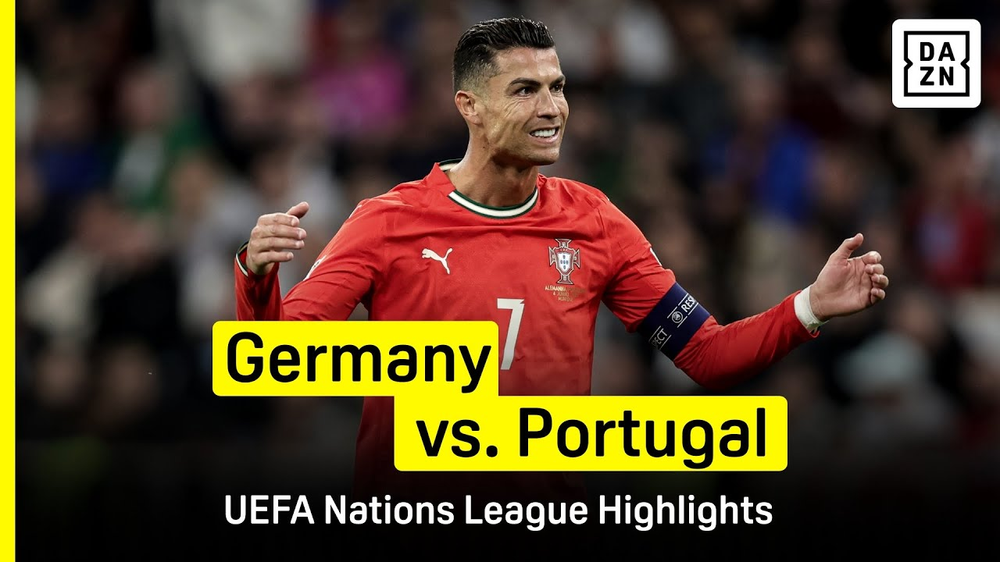

【精彩集锦 | 德国 vs. 葡萄牙（2024-25 欧国联）】
Summary: The first semi-final of the Nations League finals week sees host Germany face Cristiano Ronaldo's Portugal, with Germany's Florian Wirtz leading the attack and Ronaldo starting at 40, ending in a thrilling 2-1 victory for Portugal.
摘要： 欧国联决赛周首场半决赛，东道主德国迎战C罗领衔的葡萄牙，德国由弗洛里安·维尔茨主导进攻，40岁的C罗首发登场，最终葡萄牙2-1惊险取胜。

⏱️ Estimated Reading Time: 1 min
📚 高考3500生词 📚 雅思生词 📚 托福生词 📚 GRE生词 📚 UP主推荐生词
The first semi of this Nations League finals week pits the host Germany against Cristiano Ronaldo's Portugal.
本届欧国联决赛周的首场半决赛由东道主德国对阵C罗率领的葡萄牙。
Germany's attack is led by the much in demand Florian Wirtz while the 40-year-old superstar starts in Munich.
德国队由备受瞩目的弗洛里安·维尔茨领衔进攻，而40岁的超级巨星C罗在慕尼黑首发登场。
The space here for Balovic.
巴洛维奇在这里找到空当。
Oh, he's got it back.
哦，他又夺回了球权。
Following up Walter is denied.
沃尔特的跟进射门被挡出。
Looking for the angle.
寻找射门角度。
Pulling it back.
回传调整。
Another good save to deny Goretzka.
又一次精彩扑救，挡出了戈雷茨卡的射门。
Home advantage could count here.
主场优势可能在此发挥作用。
That's very clever from Kimmich.
基米希这脚非常聪明。
The opening goal for Germany.
德国队首开纪录。
It's a break in the deadlock.
僵局被打破。
Gündoğan fleet footed.
京多安脚步轻快。
Oh, it's brilliant.
哦，太精彩了。
It's absolutely sparkling.
这球光芒四射。
Francisco Conceição has put them back on level terms against the Germans here.
弗朗西斯科·孔塞桑为葡萄牙扳平比分。
Nice touch for Bruno Fernandes again.
布鲁诺·费尔南德斯再次巧妙触球。
Nuno Mendes for Cristiano Ronaldo.
努诺·门德斯传给C罗。
They keep writing him off.
人们不断质疑他。
They keep saying he's too old.
总说他年纪太大。
Cristiano Ronaldo keeps scoring the goals.
C罗却持续进球。
All angle was tight but he hits the post.
角度极小但他击中立柱。
Helped out by Jota.
若塔协助解围。
Can't say so.
难以言喻。
That is a miraculous double save and that will prove to be the final action of the night.
这是一次神奇的双重扑救，也成为今晚最后的高光时刻。
It finishes Germany one, Portugal two.
最终比分德国1-2葡萄牙。